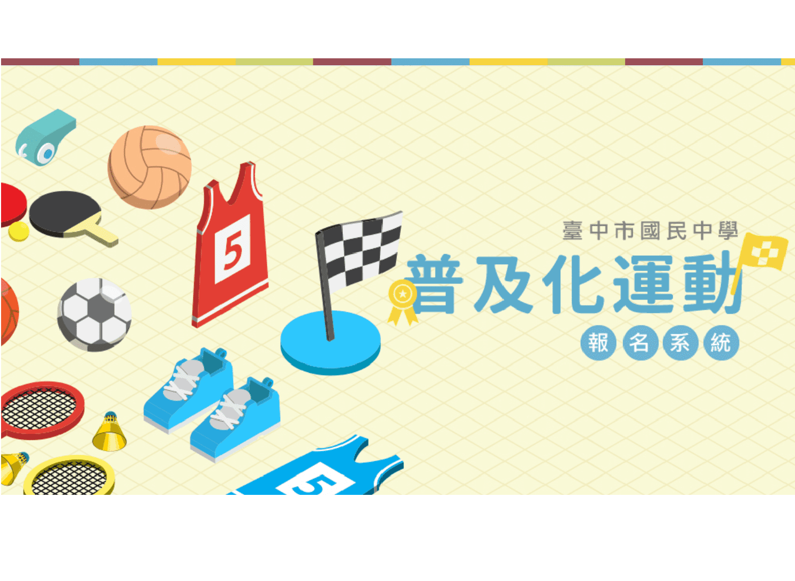

桌球
桌球
跆拳道
跆拳道
羽球
羽球
游泳
游泳
田徑
田徑
108年中等學校學生籃球聯賽
108年中等學校學生籃球聯賽

國中普及化運動
國中普及化運動
國小普及化運動
國小普及化運動
最新消息
相關連結
排球
第一區
豐原區、后里區、潭子區，石岡區、新社區，和平區、神岡區、外埔區、東勢區、霧峰區、大里區、太平區、大肚區、烏日區
第二區
中區、東區、西區、南區、北區、西屯區、南屯區、北屯區、大甲區、沙鹿區、梧棲區、大安區、龍井區、清水區、大雅區
確認
躲避球
第一區
東區、中區、北區、西區、西屯區、南屯區、南區、烏日區、太平區、大里區
第二區
豐原區、后里區、外浦區、大雅區、潭子區、神岡區、石岡區、東勢區、新社區、和平區、霧峰區、北屯區
第三區
大甲區、大安區、清水區、沙鹿區、梧棲區、龍井區、大肚區
確認
籃球
第一區
東區、中區、北區、北屯區、太平區、大里區、霧峰區
第二區
西區、南區、西屯區、南屯區、大甲區、梧棲區、沙鹿區、龍井區、大肚區、烏日區、清水區、大安區
第三區
大雅區、潭子區、后里區、豐原區、外埔區、神岡區、新社區、東勢區、和平區、石岡區
確認
足球
無分區
無分區
確認
游泳
無分區
無分區
確認
路跑
無分區
無分區
確認
跳繩
第一區
第二區
第三區
第四區
豐原區
后里區
神岡區
大雅區
第五區
第六區
第七區
第八區
潭子區
外埔區
清水區
梧棲區
第九區
第十區
第十一區
第十二區
大甲區
沙鹿區
大安區
龍井區
第十三區
第十四區
第十五區
第十六區
大肚區
烏日區
大里區
太平區
第十七區
第十八區
第十九區
第二十區
霧峰區
東勢區
石岡區、新社區
和平區
第廿一區
第廿二區
第廿三區
第廿四區
西屯區
南屯區
東區
中區、南區
第廿五區
第廿六區
第廿七區
西區
北區
北屯區
確認
健身操
無分區
無分區
確認